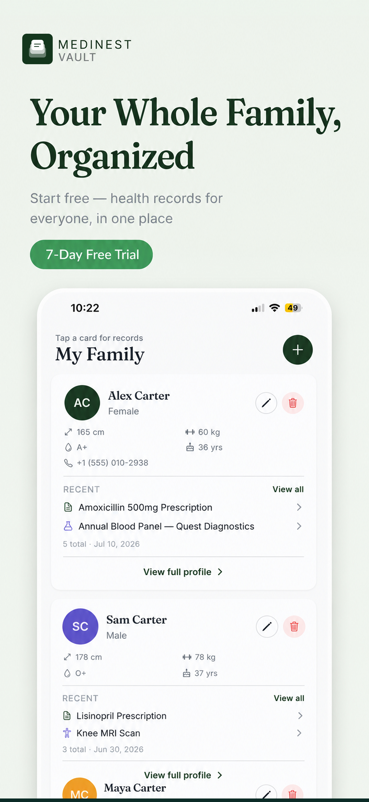

Family & Caregiving
Choosing a Family Health App: What Actually Matters
Most "health apps" in the App Store are designed for one person tracking their own steps, sleep, or weight. A true family health app needs a different foundation: multiple profiles, shared access, and records that stay organized as your household grows. Here's what to actually look for — and how MediNest is built around it.

Four things a real family health app needs
- •Separate profiles, one account. Each family member needs their own vitals, allergies, and history — without needing their own login.
- •Document storage that scales. A single family can generate dozens of prescriptions, lab reports, and insurance cards a year — the app needs a structure that doesn't collapse under that volume.
- •Reminders per person. Medication and appointment reminders need to know whose dose it is, not just that "a" dose is due.
- •Fast sharing in an emergency. A way to hand over blood type, allergies, and emergency contacts instantly — to a babysitter, a school nurse, or a paramedic.
How MediNest covers all four
MediNest's home screen is built around your family, not a single patient: switch between kids, yourself, or aging parents in a tap, with quick upload for new documents, insurance policies on file, and reminders for the whole household visible from one dashboard. Every family member's records, medications, and emergency info live under their own profile, inside one shared vault.
Frequently asked questions
What should I look for in a family health app?
Look for separate profiles per family member, document scanning and storage, medication reminders, and a way to share information with doctors or emergency contacts. MediNest includes all four in one app.
Is a family health app different from a single-user health app?
Yes. Single-user health apps assume one patient's data. A family health app like MediNest is structured around multiple profiles you can switch between, with each person's records, medications, and history kept separate but accessible from one account.
One app for the whole family's health
Free to start. No credit card required.
Get Notified at Launch